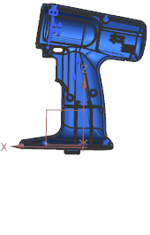
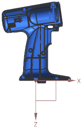

Estimated time to complete this lesson: 8–11 minutes
Use the Create Linked Mirror Part command to create an associative linked mirror part from a component in the Assembly Navigator. The source part can be either a piece part or an assembly component. The linked mirror part has the same geometry, feature groups, object groups, attributes, layer structure, product interfaces, and optionally PMI, as the source part.
|
 |
 |
|
Source part |
Mirror part |
You can:
Control which objects are mirrored by specifying the reference sets that contain the objects you want. If you select the Entire Part reference set, everything, including all reference sets, is mirrored.
Control the type of linked mirror part that is created. There are two kinds of linked mirror parts: exact and non-exact. An exact mirror part is an exact replica of the source part. A non-exact mirror part can differ from the source part because of modifications made after its creation.
Provide a template part as a seed part to be used for creating the linked mirror part.
Modify the source part by adding, removing, modifying, or reorganizing geometry. These changes are applied to the mirror part when the mirror part is updated from the source part.
|
Note |
To prevent time-consuming updates, trivial changes in the source part are not updated in the linked mirror part until a substantial change triggers the update. For example, changes in show or hide properties, layers, product interfaces, and active Part Navigator filters are trivial changes. |
If you modify an exact mirror part, all modifications are lost when the mirror part updates from the source part. Modifications made to a non-exact mirror part are not lost.
When you create a non-exact mirror part, you can specify whether broken links are deleted or kept when the source part is modified.
If you delete broken links, features that are dependent on the linked geometry may also be deleted.
If you keep broken links, you have a chance to reparent dependent features. The broken links remain until you manually delete them.
Coordinate systems in NX are right-handed. If the part being mirrored includes a coordinate system, NX mirrors two axes and derives the third axis from the CSYS Mirror Method option.
A few types of PMI views and objects are not copied, including:
PMI Section Views that are created with the PMI Section View command
Linked Section Views that are related to PMI Section Views in the source part
PMI objects that are displayed only in PMI Section Views
PMI objects that track cut geometry in a PMI Section View
PMI objects that reference geometry that is not copied to the linked mirror part. This prevents the creation of retained PMI in the linked mirror part.
Legacy checked GD&T
The Create Linked Mirror Part command is useful when you want to create an associative mirror part whose data (geometry, PMI, and user-attributes) and organization (object-groups, feature-groups, and reference sets) are associative to the source part.
|
Prerequisite |
Right-click in the background of the Assembly Navigator and ensure that WAVE Mode is on. |
|
Assembly Navigator |
Right-click a component node→Create Linked Mirror Part |